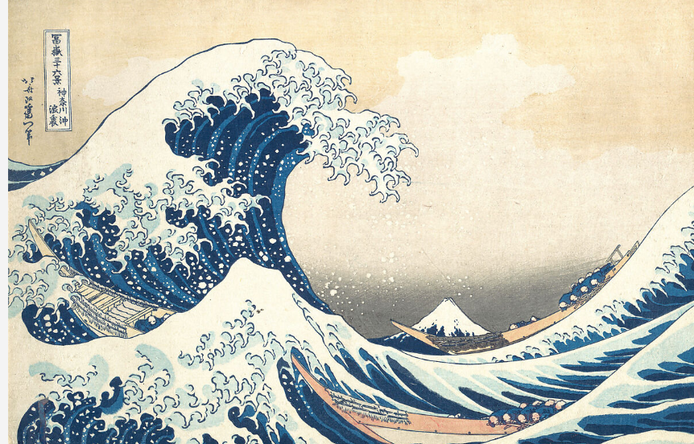
✧Descripition✧
Waves of Sea
The breathtaking composition of this woodblock print, said to have inspired Debussy’s La Mer (The Sea) and Rilke’s Der Berg (The Mountain), ensures its reputation as an icon of world art. Hokusai cleverly played with perspective to make Japan’s grandest mountain appear as a small triangular mound within the hollow of the cresting wave. The artist became famous for his landscapes created using a palette of indigo and imported Prussian blue.
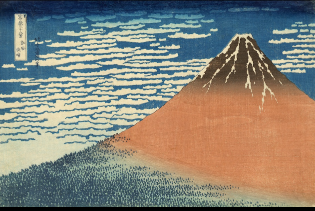
✧Descripition✧
Mount Fuji
A masterpiece of the Thirty-six Views of Mount Fuji series. The titular breeze refers to the southerly wind. It is said that this scene, also known as “Red Fuji”, can only be seen in the early morning from summer to autumn. There are various theories regarding its composition, though from the placement of Mt. Fuji on the right and noticing the light coming from the left (the east), it is thought that this portrays the northern side of Mt. Fuji from somewhere near Lake Kawaguchi. The majestic appearance of Mt. Fuji, towering calmly above the cirrocumulus clouds which hint at the coming autumn, is a one-of-a-kind masterpiece even among works of art that embody Mt. Fuji.
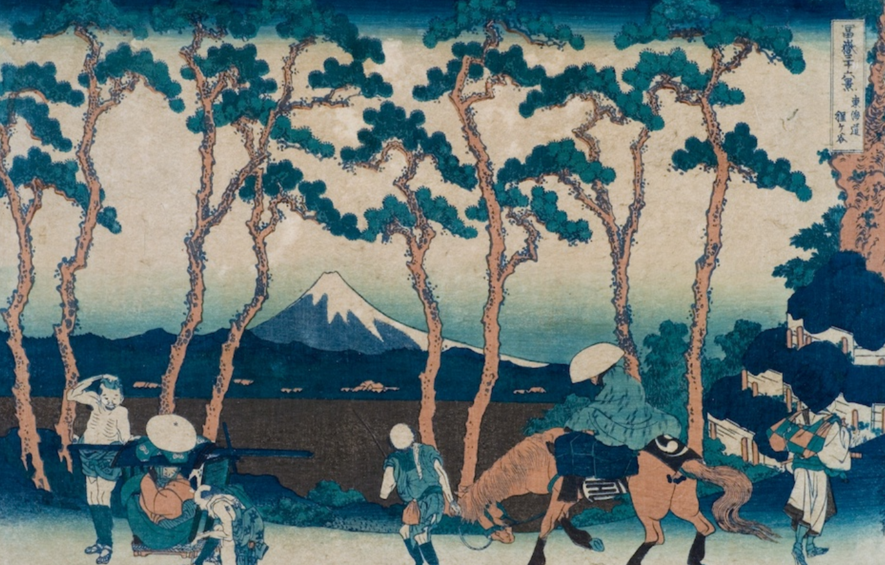
✧Descripition✧
Travellers Between Pines (Tokaido Hodogaya)
Hodogaya on the Tokaido'. It shows travellers on the main Tokaido road going through tall pine trees at Hodogaya. Some ride horse, some walk, some rest. Between pine trunks, Mount Fuji appears small in distance. The pines are curved and tall, made with aizuri blue technique. Hokusai captures everyday Edo period travel life - common people moving with luggage. Fuji watches over them, stable while humans move. It shows his idea that Fuji is always present, watching human life from behind daily activities.
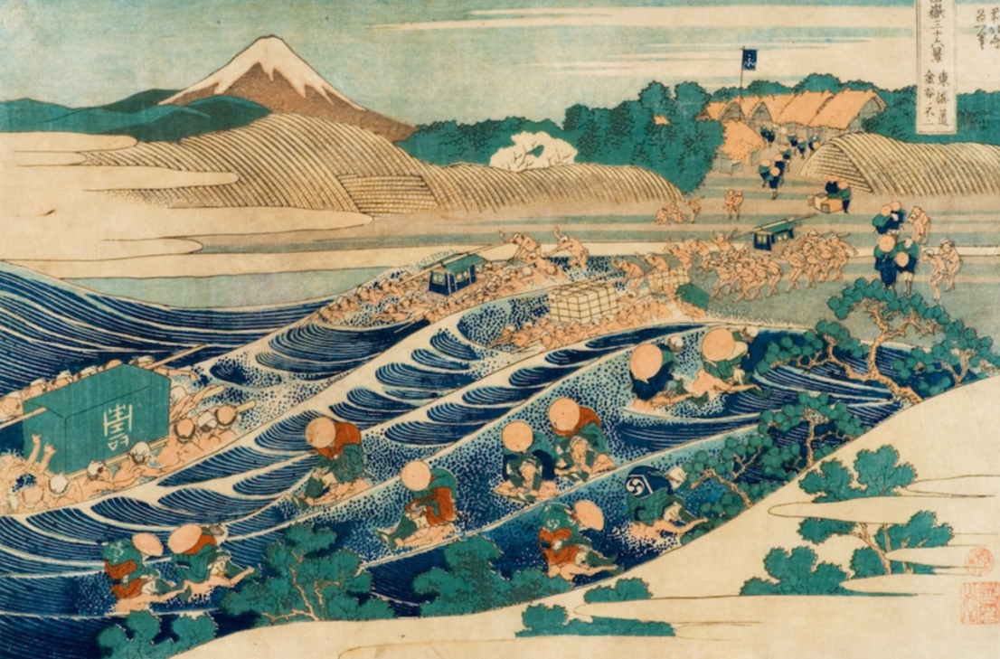
✧Descripition✧
Honjo Tatekawa
Honjo Tatekawa, the Lumberyard at Honjo'. It shows workers cutting huge tree trunks into planks in a timberyard in Edo. The logs create strong diagonal lines leading to Mount Fuji far away in background. One worker stands on log, others measure wood. It is a picture of labour and industry in Edo. Hokusai contrasts human work - cutting nature - with eternal nature of Fuji. The composition is modern with foreground large and background small. The wood grain and texture are printed with great detail using woodblock.
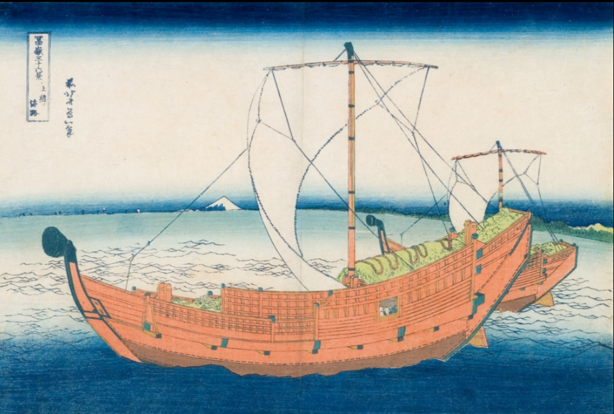
✧Descripition✧
Takase Boat (Hitachi Ushibori)
'Ushibori in Hitachi Province'. It shows a large sailing takasebune cargo boat anchored in marsh with its prow upturned. The boat is painted orange-brown with ropes and masts detailed. The water is calm blue, Fuji faint in background. Ushibori was a lake town where such boats carried rice and goods. Hokusai focuses on boat construction, showing his love for crafts. The boat dominates foreground, Fuji is small, showing human engineering vs nature. It is famous for its bold orange colour and precise line work.
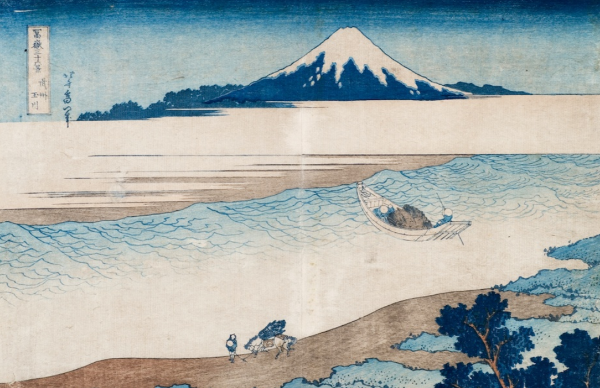
✧Descripition✧
Soshu Chigasaki
'Soshu Chigasaki' or 'The Tama River in Musashi'. It shows wide shallow sea or lake with a tiny boat in middle, Mount Fuji snow-capped on horizon across white beach. Foreground has small figures on shore with trees. It is very empty and serene, with large blank space of water and sand, emphasizing distance and scale. The Prussian blue gradation of sky and water is beautiful. Hokusai shows Fuji as distant dream, barely visible but always there. It evokes mono no aware - sadness of distance and transience.
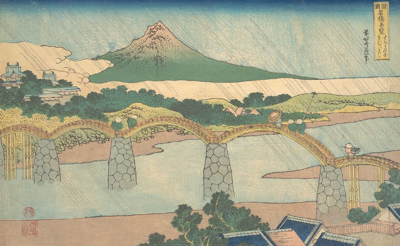
✧Descripition✧
Ono Shinden in Suruga
'Ono Shinden in Suruga Province' - your image shows a low hill with Fuji behind and sea in foreground, with large grey blocking on right which is actually window shadow. The print shows farmers in a new rice field development near Fuji with Fuji looming. It is about new land development in Edo period. The composition is simple - flat field, Fuji in centre. Hokusai celebrates agriculture and human effort to cultivate land under sacred mountain. The pale colours show early morning light.
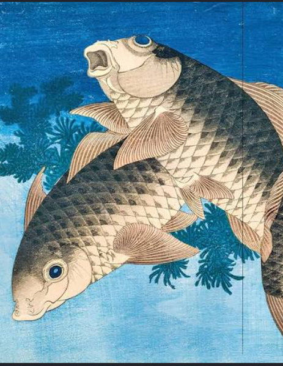
✧Descripition✧
Two Carps
Fuji series but from his nature study Kachō-e prints - 'Two Carps Leaping'. It shows two large carps, one black and one brown, leaping out of blue water. Carp symbolizes strength and perseverance in Japan as it swims upstream. The water is printed with deep blue and waves, fish scales with fine lines. Hokusai made many fish, bird and flower studies after Fuji series. It shows his observation of nature and movement. The dark blue background contrasts with fish body, very dynamic and decorative.
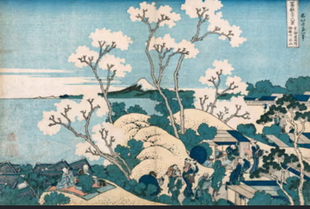
✧Descripition✧
Cherry Blossoms
Gotenyama, Shinagawa on the Tokaido' - famous hanami cherry blossom viewing spot. It shows white cherry trees in full bloom on a hill with people picnicking, drinking and viewing, with Fuji and bay in distance. The white blossoms are printed with light pink and grey, branches dark. It captures Edo people's leisure culture - cherry viewing party. Fuji appears behind cherry, linking spring, beauty and eternity. It is joyful, crowded with small figures enjoying life. Hokusai shows festival atmosphere with great detail of Edo daily life.
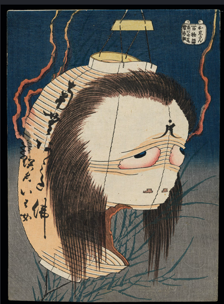
✧Descripition✧
Hyaku Monogatari Series
'The Ghost of Oiwa' from 'One Hundred Ghost Stories (Hyaku Monogatari)' c.1831. It shows the yurei ghost Oiwa with long black hair hanging from a paper lantern, one eye drooping, face distorted with anger and sadness. Oiwa was murdered by husband and returns as ghost. Hokusai shows supernatural horror with great psychological power. The background is dark night with mosquitoes. This series was very popular as ghost stories were entertainment in Edo. It shows Hokusai's ability to draw not just landscape but also horror and kabuki theatre.
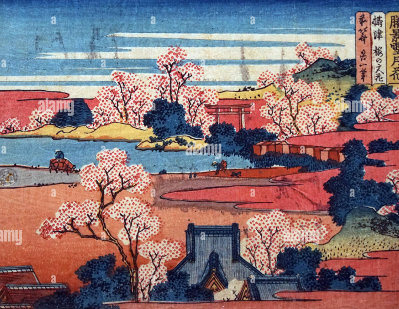
✧Descripition✧
Bijin-ga - 'Woman with Cat' or 'Courtesan' print. It shows a Japanese beauty in light blue kimono standing gracefully, hair in traditional shimada style. It is displayed in your photo as interior poster. Hokusai also made many beauty prints early career before Fuji. The woman is slender, elegant, with fine line work for kimono folds. The style is delicate, different from bold Fuji prints. It shows Edo's floating world - pleasure quarters, fashion and feminine beauty. Such prints were sold cheap like postcards, costing same as bowl of soup.
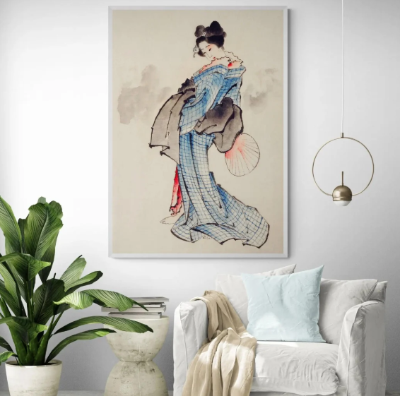
✧Descripition✧
Bijin-ga
Bijin-ga - 'Woman with Cat' or 'Courtesan' print. It shows a Japanese beauty in light blue kimono standing gracefully, hair in traditional shimada style. It is displayed in your photo as interior poster. Hokusai also made many beauty prints early career before Fuji. The woman is slender, elegant, with fine line work for kimono folds. The style is delicate, different from bold Fuji prints. It shows Edo's floating world - pleasure quarters, fashion and feminine beauty. Such prints were sold cheap like postcards, costing same as bowl of soup.
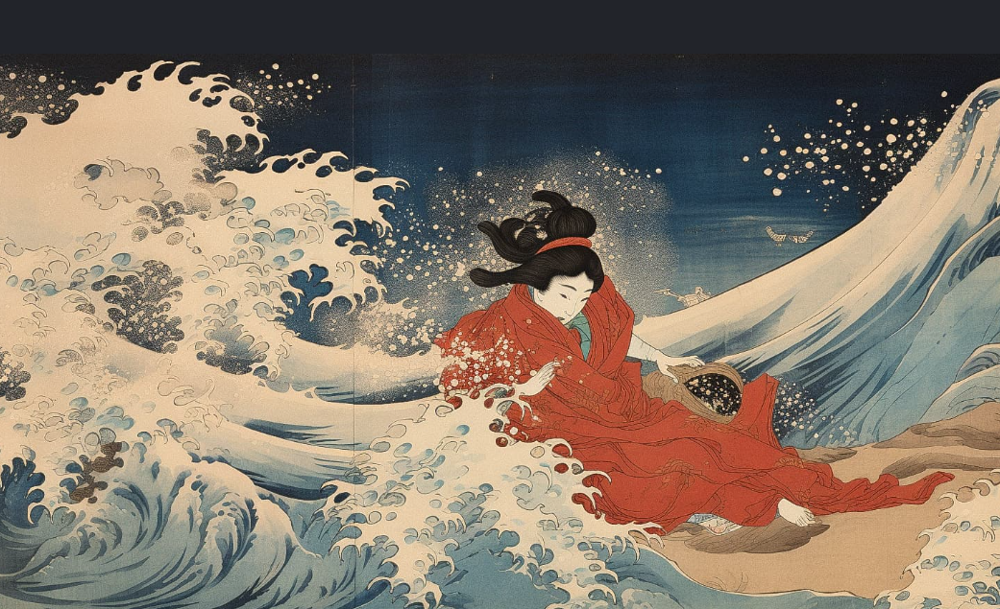
✧Descripition✧
Fishermen Pulling Net
'Kajikazawa in Kai Province'. It shows fishermen on rocky shore pulling a huge net with fish, waves crashing with red blood-like water from fish. The composition is dramatic with net diagonal and Fuji small above. The red colour shows catch. Hokusai shows hard labour of fishermen risking life. The wave and net create movement. It is one of most dynamic prints in series, showing man's struggle with sea, while Fuji watches silently. The printing of wave foam with white pigment is very advanced for that time.
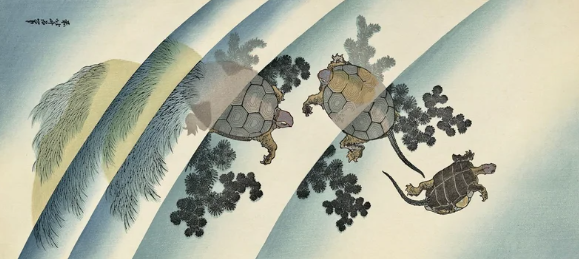
✧Descripition✧
From Aquatic Creatures Series
'Turtles' - three turtles swimming in water with seaweed, with curved rainbow-like bands behind. This is from his private surimono or kachō-e series, not Fuji. It shows turtles floating, maybe symbolic of longevity. Fuji lives long, turtle also lives long, so both are auspicious. The background has soft blue and yellow gradation like sky or water surface. The turtles are drawn with great naturalism, shell pattern detailed. Hokusai loved turtles and painted them many times. It shows his humour and love for small creatures, not just grand mountain.
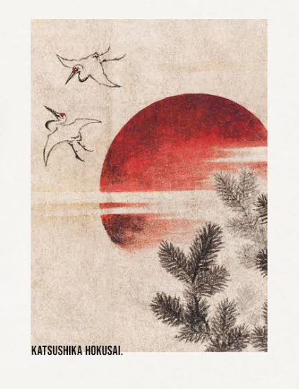
✧Descripition✧
Pine and Red Sun
'Cranes Over Pine and Red Sun' - your image shows large red rising sun behind pine branch with cranes flying. Cranes symbolize long life, pine also symbolizes longevity, sun symbolizes Japan. This is auspicious New Year print, very symbolic. Red sun is printed with deep beni red, cranes with fine black outline. It is not part of 36 Views but from his good-luck prints. Hokusai wanted to live 110 years, so he loved longevity symbols. It is simple, poetic and spiritual, showing his hope for long life and Fuji as immortal mountain.
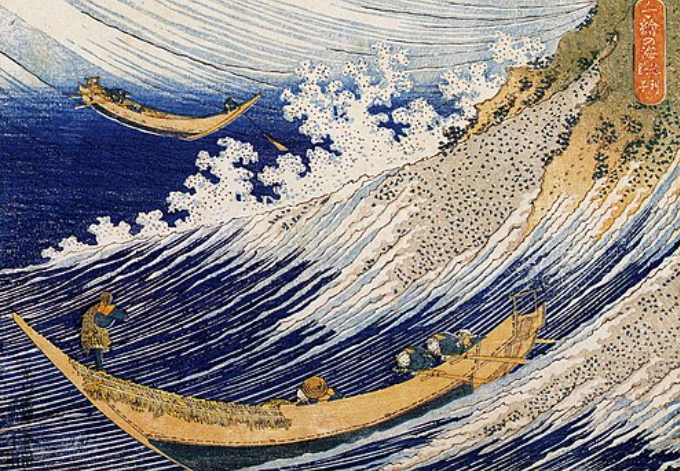
✧Descripition✧
Image in Row
The print hidden but likely is 'Dawn at Isawa in Kai Province'. It shows early morning misty landscape with travelers on bridge, Fuji emerging in pale light. It is famous for its subtle bokashi gradation of dawn sky from dark blue to light yellow. It captures transient moment of daybreak, quiet and cold. Hokusai shows how Fuji changes colour at different times of day.
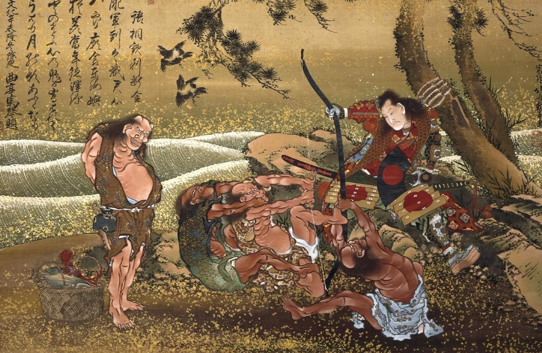
✧Descripition✧
Ghost Story
'Kohada Koheiji' from Hyaku Monogatari ghost series. It shows skeleton ghost of actor Kohada Koheiji peeping at his wife and lover in hut near water, with Mt Fuji? The scene is macabre with rotting face, bony hands. Kohada was murdered and returns. Hokusai shows horror with black background and pale ghost. It was inspired by kabuki play. The text on top tells story. This series was never completed but is considered masterpiece of Japanese horror art, influencing modern manga.
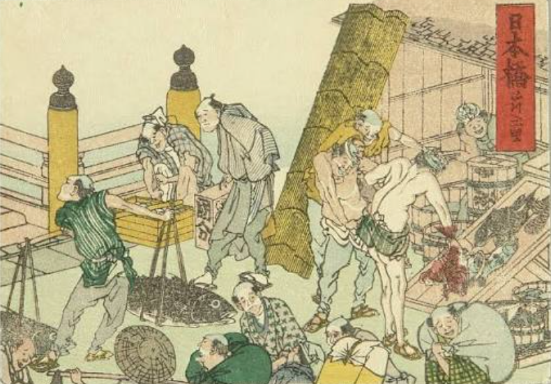
✧Descripition✧
Katakura in Suruga
'Fuji from the Tea Plantation of Katakura in Suruga Province' - your image shows workers picking tea leaves on terraced slopes with Fuji behind, and two straw pillars. It shows rural labour - women picking tea, men carrying baskets. Hokusai documents agricultural life. Tea was important cash crop. The green tea fields contrast with white Fuji. It shows harmony of human work and sacred mountain. The figures are small but full of life, showing daily work in Edo period countryside.
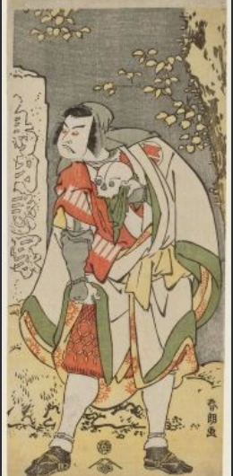
✧Descripition✧
Bijin and Ukiyo-e Daily Life
shows two women in kimono with child, one standing one bending - this is from Hokusai's early 'Daily Life' or 'Women' prints. It shows mother and servant with child, intimate domestic scene. The kimono patterns are printed with fine lines and pale colours. It shows his skill in capturing human gesture and clothing. Before Fuji, Hokusai made hundreds of such everyday life images that Edo merchants loved to buy.
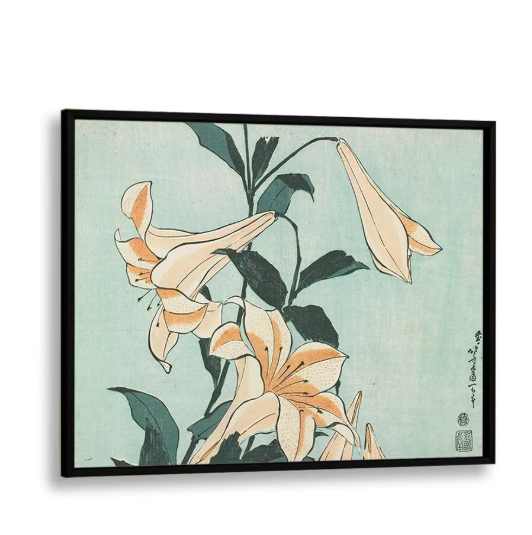
✧Descripition✧
Lilies
'Lilies' from Kachō-e - Birds and Flowers series. It shows white lilies with green leaves, delicate and botanical. Hokusai made many flower studies late life with great realism. The white flowers are printed with blind embossing karazuri to give texture, leaves with green gradation. It is simple, elegant and scientific like European botanical print but with Japanese aesthetic. It shows his last years interest in nature's small beauty, not just grand Fuji, and his mastery of woodblock to create soft, painterly effect.